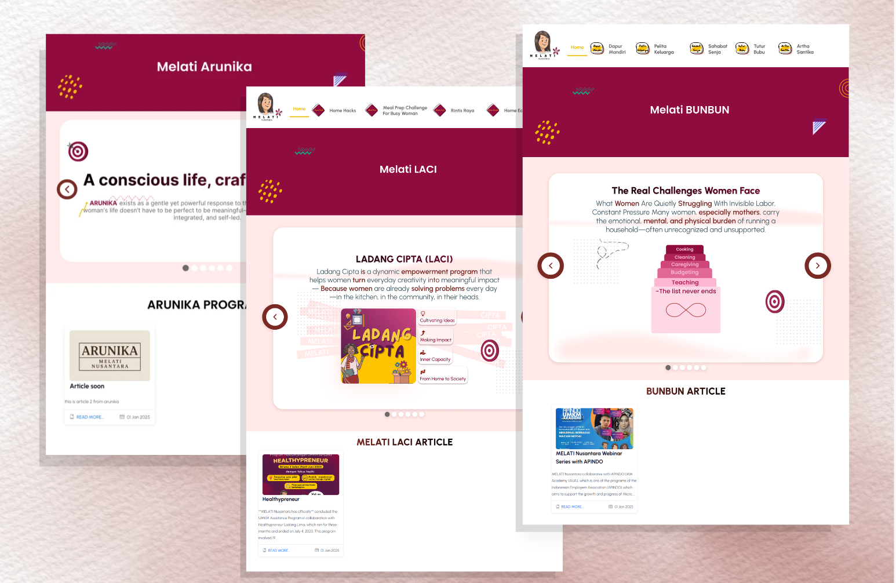
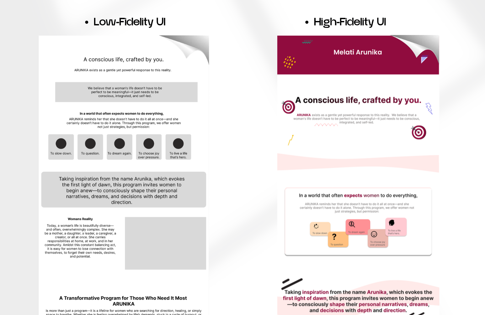
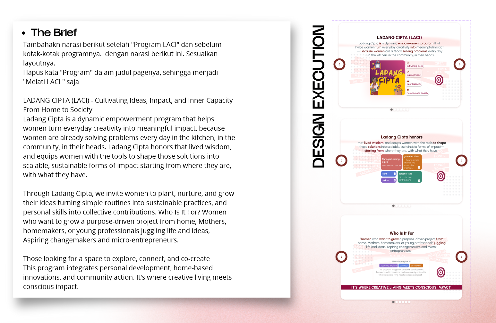
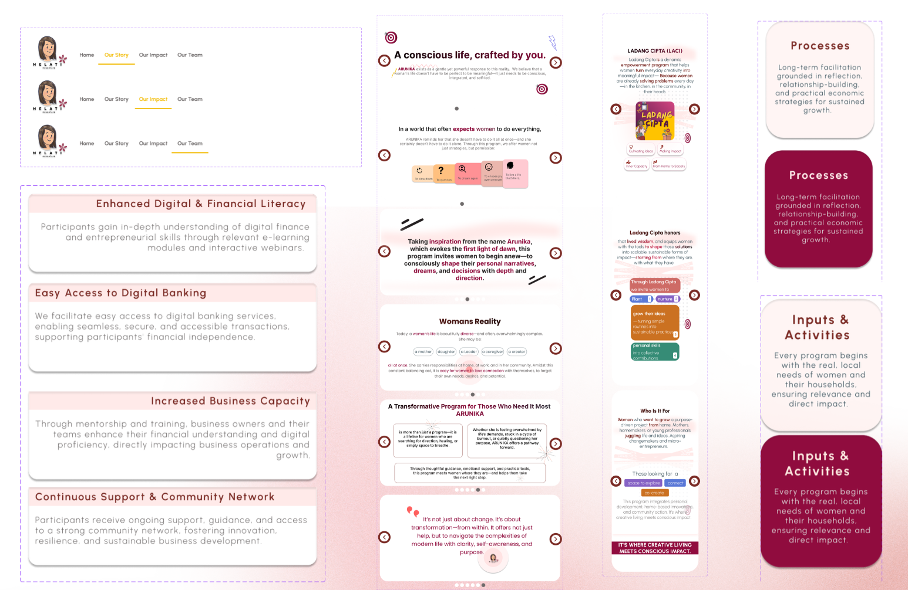

Melati Nusantara Website
New page concepts for an existing website, designed to stay consistent with its visual direction while making long content easier to read.
- Role
- UI/UX Designer (freelance)
- Timeline
- Jul 2025 – Sep 2025
- Type
- Client website, remote
- Tools
- Figma, Wireframes, Prototype

Starting point
An existing website with a defined visual direction and user flow.
Deliverables
Low and high-fidelity designs, wireframes and a fully interactive prototype for each page section.
Handoff
The complete animated and interactive UI plus a developer-ready reference, handed to the client.
Starting from what exists
I researched the existing website's design and content first, then defined page concepts consistent with its visual direction and user flow instead of redesigning from zero.
Low fidelity to high fidelity
Each page section moved from low-fidelity layouts to high-fidelity designs and wireframes, ending in a fully interactive prototype.

Making long content readable
Much of the content was text-heavy. I restructured it using visual hierarchy, typography and spacing so the reading experience improved without cutting the message.

Reusable components
I built reusable components and assets so new sections stay consistent in design, navigation and content structure.

Handoff
I delivered the complete animated and interactive UI together with a developer-ready reference for implementation, and handed it over to the client.